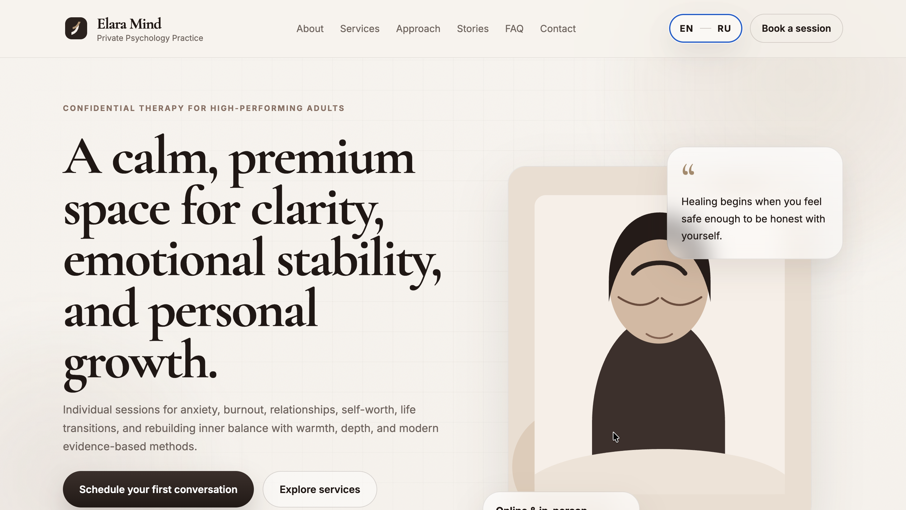
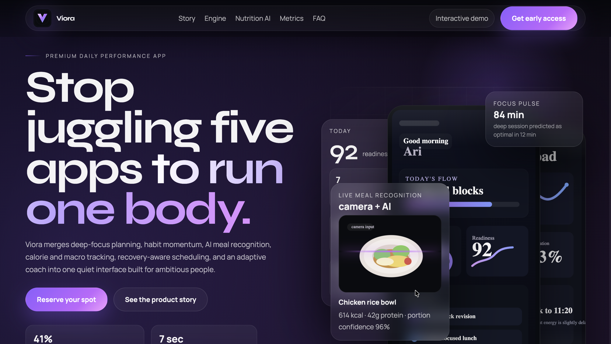
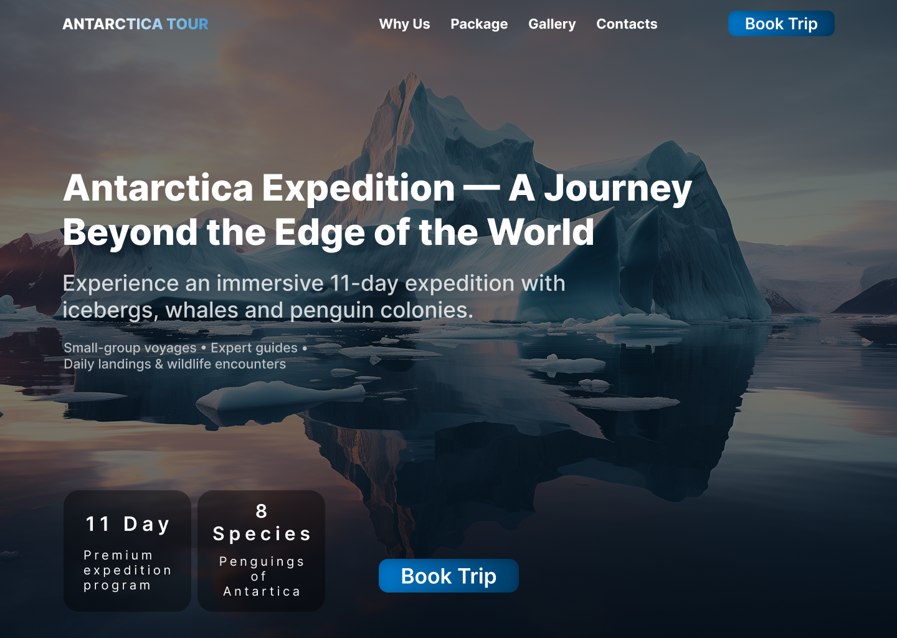

Fix / setup
Правки, формы, плагины, настройка темы
от $45
От быстрых запусков до кастомных решений с ACF, удобной структурой и чистой визуальной системой.

Elara Mind

Eco Glamping

Antarctica Tour
Elara Mind — премиальный сайт для частной психологической практики
Разработать современный и эстетичный сайт для частного психолога на основе готового макета из Figma. Важно было сохранить премиальную подачу, спокойную визуальную атмосферу, удобную структуру для записи на консультацию и сделать сайт простым в управлении через WordPress.
Инструменты: WordPress, Figma, ACF Pro, кастомная тема, HTML, CSS, JavaScript.
Viora — премиальный сайт для AI-приложения по продуктивности и питанию
Разработать эффектный премиальный сайт для digital-продукта, который объединяет планирование дня, AI-распознавание еды, подсчёт калорий, метрик состояния и персональные рекомендации в одном приложении. Важно было подчеркнуть технологичность продукта, современный визуальный стиль и сделать подачу сильной для будущих пользователей и инвесторов.
Инструменты: Figma, WordPress, кастомная тема, HTML, CSS, JavaScript, ACF Pro.
Antarctica Tour — сайт экспедиции в Антарктиду
Создать многостраничный сайт для круизной компании, продающей туры в Антарктиду. Требовалось представить программу, пакеты и побудить к бронированию.
Инструменты: WordPress, ACF, Custom Post Types, WPML, плагин календаря.
От быстрых правок до сайтов с удобной админкой
Правки, формы, плагины, настройка темы
Одностраничный сайт с редактируемым контентом
Несколько страниц, кастомные блоки, ACF, удобная админка
Могу собрать похожий формат под твою задачу: от быстрого теста или одной секции до полноценного проекта.